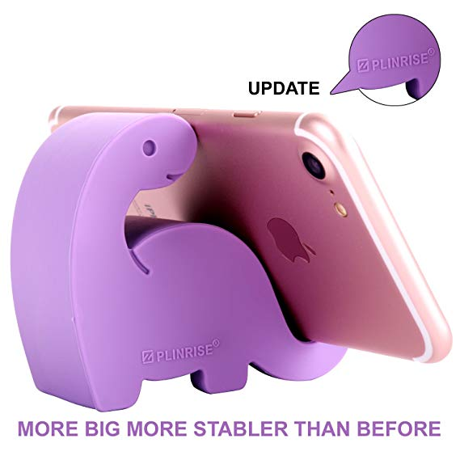
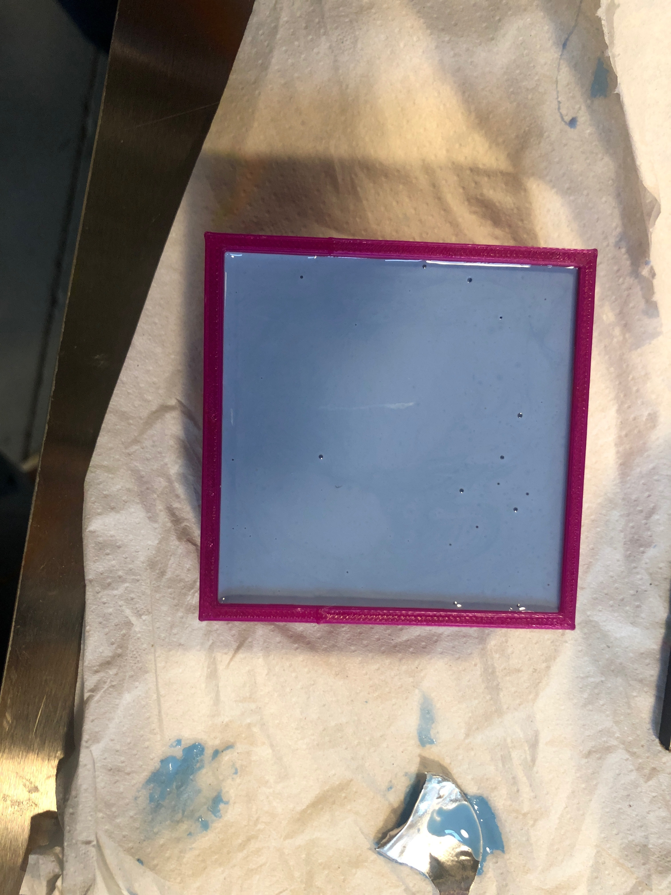

Assignment 6: Molding and Casting
My inspiration for this assignment:

Process
My coworker has a cellphone holder at her desk in the shape of a dinosaur. I decided to use that as an inspiration
to make my mold. I found an STL file of a dinosaur that was very similar to the one my coworker has on her desk and decided
to make the mold from it.

I was going to try my hand at milling the machinable max, however, due to the size I was not able to mill it.
When I went to the Mill to get it cut, they said none of the qualified staff members were around. When I went to Nadya's OH
on Sunday, I was not one of the lucky few to get my piece milled with the ShopBot so I looked for alternate routes. I decided to
3D print the piece rather than try to mill it using the Bantam Mill in light of all of the problems I had in the milling assignment.
To create the mold's STL file, I downloaded the file into Rhino and built a box around it. The box is 2x2 inches and I scaled
the dino down to fit in the box with some room.


After the mold was 3D printed, I mixed the oomoo to create the silicone mold. Since I work, I left the mold in the Mill all day and night
and picked it up before class.

To conserve plaster for the rest of the class, Omari, Kira and I gt together to plaster together so we would use too much or too
little plaster.

Issues
Issue 1 Machinable wax was too big and no one at the Mill was around to cut it.
Issue 2 During Sunday OH, I was not one of the lucky few to get their wax milled with the shopbot so I decided
to 3D print instead. Since I printed at Fluke, I had no issues 3D printing.
Final Design
My final dinos came put super cute! I'm really happy with how they turned out.

Me to my dinos:

Source Files, Specs and Peer Attributions
STL Files for Dino Mold here
Thingiverse Dinosaur Cell Phone File Source here
Peer credit goes to Kira and Omari for helping me figure out the silicone and plaster.
Requested additional file here